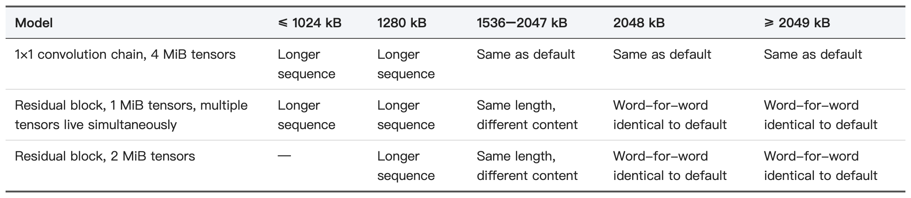
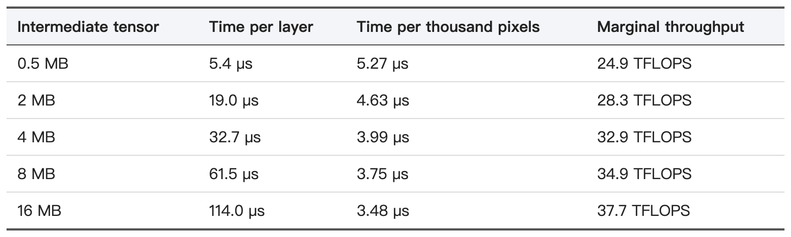
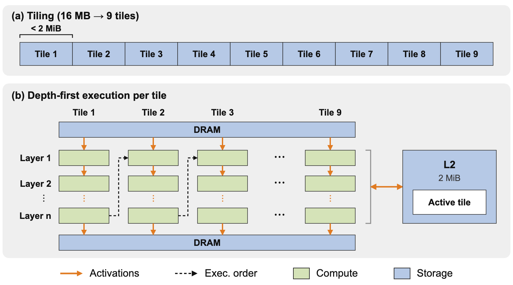
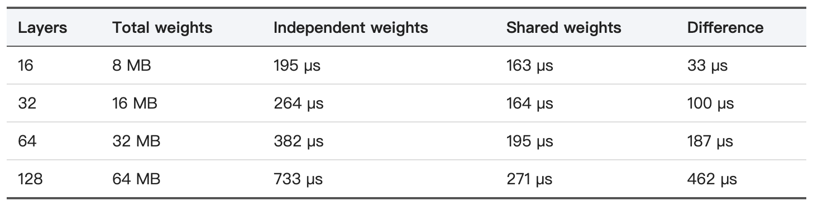
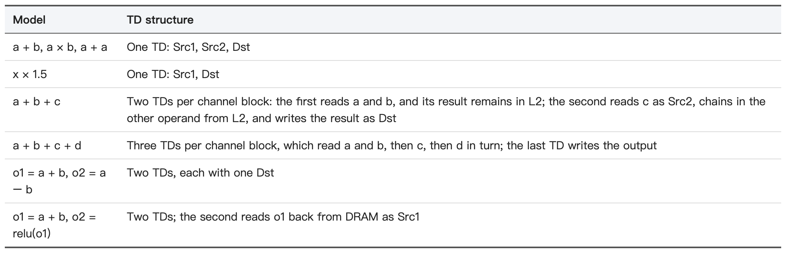
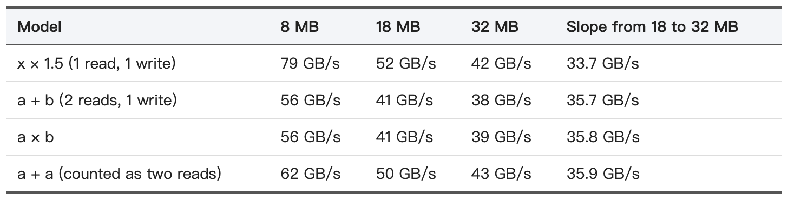
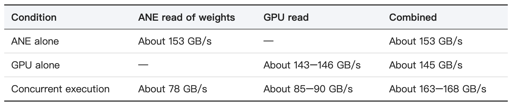
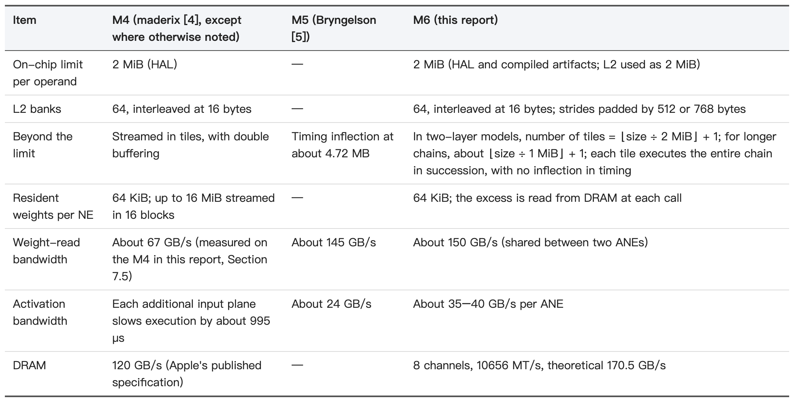

This post is chapter 9 of the report "Microarchitecture of the Apple M6 Neural Engine: An Empirical Study Based on Compiled Artifacts, Execution Traces, and Power Measurements", reproduced unchanged. Full report: web; data and tools: GitHub. Section, figure and table numbers follow the report.
Chapter 7 measured the capability of the compute array under the conditions that weights are resident and activations stay on chip. In actual networks, data often must be moved between DRAM and on-chip storage, and the capacity and bandwidth of the data paths likewise determine performance. The data moved by the ANE falls into two categories. Weights are the parameters of the model; they are determined at compile time, and the Kernel DMA reads them from DRAM into the weight buffer of each NE during each inference. Activations are tensors that flow through the network and vary with the input of each inference. The input and output of the network reside in DRAM and are moved between DRAM and L2 by the Tile DMA. Intermediate results between layers remain in L2 when L2 capacity permits and when the compiler can execute adjacent layers together; otherwise they are written back to DRAM and read back by the next layer. This chapter examines, in turn, L2, the weight path, the activation path and DRAM. The main conclusions are four. First, the compiler uses the L2 of each ANE as exactly 2 MiB. When an intermediate tensor exceeds 2 MiB, it is split into several tiles, and each tile executes the complete chain in succession, so intermediate results do not leave the chip. Second, the bandwidth at which native kernels read weights is about 150 GB/s, independent of the size of each layer's weights and of the kernel shape (rewritten kernels are limited by another stage measured per weight element; Section 7.4.2). A single ANE already approaches the upper limit of DRAM bandwidth, and two ANEs together cannot substantially exceed it. Third, the bandwidth of the activation path is only about 35–40 GB/s per ANE, and each TD reads at most two and writes at most one DRAM tensor. Fourth, the theoretical DRAM bandwidth is 170.5 GB/s; the ANE alone can reach about 150–159 GB/s, and when the ANE is used concurrently with the GPU, the two roughly share the bandwidth equally.
9.1 Test Methodology
The questions in this chapter fall into two categories, which require different methods. The first category concerns the capacity and organization of on-chip storage: how large L2 is, how intermediate tensors are tiled, and how banks are mapped. This information is directly reflected in the compiler's memory allocation, and timing experiments can provide little useful information for it. As will be seen below, when the intermediate tensor grows from 0.5 MB to 16 MB, the time per pixel decreases rather than increasing, with no inflection point at all. For this category of question, we therefore mainly compare compiled artifacts. By changing the tensor size or the compilation options, we observe how the length of the TD sequence, the number of tiles and the address registers change (tools: anecc.m, td_widths.py) 〔HWX, HAL〕.
The second category concerns the bandwidth of each data path. Such questions must be answered by direct measurement, but the data-movement time must be separated from the compute time and the host overhead. For the weight path, we construct a model with very little computation (for example, a chain of 1×1 convolutions of width only 16), so that the time to read weights is much greater than the compute time. We then compare two versions: one in which the weights differ for each layer, and one in which all layers share a single set of weights. In the latter, the weights remain resident on chip, so the difference in time between the two versions is the cost of reading weights. For the activation path, we construct a model that contains only elementwise operations and has tensors large enough that reading and writing activations becomes the bottleneck. Chapter 6 shows that the total call time of Core ML contains a host wake-up overhead that varies with task duration. This overhead would mix into the timing slope and cause the bandwidth to be underestimated. Therefore, the bandwidth figures in this chapter are determined from the ANE task duration obtained from kdebug firmware timestamps, and results obtained from timing are used only as a reference 〔kdebug, timing〕. In addition, we use the DRAM bandwidth and frequency-state statistics in IOReport to observe the state of the memory controller. We also have the GPU read memory at the same time, measuring the sharing of DRAM between the ANE and the GPU 〔IOReport〕.
9.2 L2
9.2.1 Capacity
The physical capacity of L2 cannot be read directly, but how the compiler uses L2 can be probed through compilation options. ANECCompile accepts an option named L2Size (in units of kB, where 1 kB is taken as 1024 bytes), which is passed to setL2Size of the compiler parameter object. We compiled the same model with different values and compared the resulting TD sequences. The reason for comparing only the TD sequences, rather than entire files, is that the version information in a file records the compilation options themselves. Table 9-1 gives the results (data: l2sz/; model generation: l2res.py) 〔HWX〕.
Table 9-1. Changes in the TD sequence under different values of L2Size

Two points in Table 9-1 deserve attention. First, for the residual blocks in which multiple tensors are simultaneously live, the TD sequence is word-for-word identical to the default compilation only when the value is not less than 2048 kB. At 2047 kB it already differs, which indicates that the default value is exactly 2048 kB. A single convolution chain is identical to the default already at 1536 kB and above, which is not sufficient to discriminate. Second, when the value is increased from 2049 kB to 4 GB, the TD sequence remains identical to the default. This indicates that the effective value is capped at 2 MiB, or that the allocator cannot exploit a larger space.
Comparing the default compilation with the residual-block product compiled at L2Size = 2047 shows that the compiler indeed uses the top of the 2 MiB range. The two differ in 48 words, located mainly in a group of address registers in the 0x10xx range (for example, 0x1044, 0x1052 and 0x1053). We infer that this group of registers describes addresses and strides within L2 〔inferred〕. In the default compilation, a 0.5 MiB buffer is placed at offset 0x180000, occupying the interval [1.5 MiB, 2 MiB) and exactly reaching the boundary 0x200000. When the L2 capacity is reduced by 1 kB, that address interval can no longer accommodate the buffer, and the compiler therefore reallocates it to offset 0x080000 〔HWX〕. This result is consistent with two further lines of evidence. In the v24 layout, the L2 address and stride fields occupy 17 bits from bit 4 upward; at a granularity of 16 bytes, the addressable limit is exactly 2²¹ bytes, that is, 2 MiB. In the HAL parameter table, the on-chip limit for a single operand is 2 MiB (offset 0x1d8), and the maximum L2 stride is 2 MiB − 16 (offset 0x218) 〔compiler, HAL〕.
Taken together, we conclude that the compiler uses the L2 of each ANE as exactly 2 MiB and fills this space, so that the two ANEs together total 4 MiB. maderix [2] earlier inferred from a performance drop near 24–32 MB on the M4 that the on-chip SRAM is about 32 MB. The author later described it in Part 4 [4] using a 2 MiB per-operand threshold, and the results of this report agree with the latter.
9.2.2 Tiling of Intermediate Tensors
For intermediate tensors that exceed 2 MiB, the experiments described below reveal the tiling behavior of the compiler. We first used timing measurements to determine the time per layer of a 1×1 convolution chain (256 channels, height 1, width 1024–32768, intermediate tensors 0.5–16 MB). The results are given in Table 9-2 (data: c12_run.txt) 〔timing〕.
Table 9-2. Intermediate tensor size and time per layer (1×1 convolution chain with 256 channels, dual-ANE)

As the tensor becomes larger, the time per pixel instead becomes shorter, and no inflection point appears at 2 MiB. If the 16 MB intermediate tensor were written back to DRAM and read again at every layer, the required bandwidth would be about 280 GB/s, which exceeds the bandwidth that DRAM can provide. This indicates that the intermediate results do not enter DRAM.
The compiled artifacts reveal the mechanism behind this behavior. We built the same models in single-layer and two-layer versions, compiled them without executing them, and compared the lengths of the TD sequences (data: c1_hwx/). The TD sequence of the single-layer model is always 0x1d8 bytes long, independent of tensor size, which indicates that the input and output of a single-layer model reside directly in DRAM and that no tiling is required. The two-layer model behaves differently. When the intermediate tensor is 0.5 MB or 1 MB, the TD sequence of the single-ANE program is 0x340 bytes long; starting at 2 MB, each additional 2 MiB increases the sequence by 0x320 bytes, that is, one additional TD for each of the two layers. We therefore derive the number of tiles as follows:
number of tiles = ⌊intermediate tensor size ÷ 2 MiB⌋ + 1
That is, every tile must be strictly smaller than 2 MiB: a 2 MB tensor is split into 2 tiles, a 4 MB tensor into 3 tiles, and a 16 MB tensor into 9 tiles (about 1.78 MB each) 〔HWX〕. This rule was derived from a two-layer model with a single intermediate tensor. In longer chains, the input and output intermediate tensors of a layer must reside in L2 simultaneously, and the tiles are therefore finer. The 256-channel chains with widths 6144, 8192, 12288 and 14336 in Table 10-4 of Section 10.5 (intermediate tensors of 3–7 MiB) are split into 4, 5, 7 and 8 tiles per layer, respectively, which is consistent with a number of tiles equal to ⌊intermediate tensor size ÷ 1 MiB⌋ + 1 〔HWX, inferred〕. Tile widths are integer multiples of 128 columns and are kept as equal as possible. After tiling, each tile executes all layers of the complete chain in succession before the next tile is processed, and intermediate results remain in L2 throughout. This is why no inflection point is visible in the timing experiments: tiling changes only the order of execution and requires no additional DRAM reads or writes. This rule is consistent with the 2 MiB per-operand limit in the HAL parameter table, and also with maderix [4], who reports that tensors exceeding 2 MiB are processed in streamed tiles. Figure 9-1 illustrates the tiling of intermediate tensors.

Figure 9-1. Tiling of intermediate tensors. (1) A 16 MB intermediate tensor (256 channels, width 32768 columns) is split into 9 tiles of about 1.78 MB each. (2) Each tile executes the complete chain in succession, intermediate results remain in L2, and data is read from DRAM only at the first layer and written to DRAM only at the last layer.
In a dual-ANE program, the compiler retains the tiling grid used for the single ANE and then assigns the list of whole tiles to the two ANEs. When the number of tiles is odd, the workloads of the two ANEs cannot be divided equally, and the extra tile is always assigned to ANE1. This causes the execution time of the dual-ANE program to be determined by ANE1. Across the widths measured, the execution time is at most about 19% longer than an even split, which corresponds to a throughput reduction of about 16%. This problem is discussed in detail in Chapter 10.
9.2.3 Banks and Row Stride
maderix [4] found on the M4 that the SRAM consists of 64 banks interleaved at 16 bytes, and that the compiler selects an appropriate row stride to avoid bank conflicts. To verify this on the M6, we compiled 3×3 convolution chains (64 or 128 channels, height 16, width 8–136). Each model was compiled once with the default options and once with bank-conflict optimization disabled (DisableL2BankConflictOpt=true), and we compared the stride registers of L2 tensors (tool: l2bank.py; data: l2bank_table.txt) 〔HWX〕.
With the optimization disabled, the values of registers such as 0x1044 and 0x1053, which we infer are the channel strides of L2 tensors, are all integer multiples of 1024 bytes. In the default compilation, the compiler adds 512 or 768 bytes to these values, and the two alternate with width. 1024 bytes is exactly 64 banks × 16 bytes, that is, the length of one cycle of the bank mapping. If the stride of each channel plane is an integer multiple of 1024 bytes, all planes start at the same bank, and accesses to adjacent channels conflict. Adding 512 or 768 bytes offsets the starting points of the planes by 32 or 48 banks. This result agrees with the bank count (64, offset 0x1e8) and access granularity (16 bytes, offset 0x1e0) in the HAL parameter table, and it provides evidence from M6 compiled artifacts for the structure of 64 banks with 16-byte interleaving 〔HWX, HAL〕. The exe_cycles values of the two compilations are exactly identical, which indicates that the compiler's performance model does not assign a penalty for bank conflicts on these shapes.
9.3 Weight Path
9.3.1 Storage of Weights
Sections 5.6 and 7.3.1 have already described that the compiler sets a resident-weight limit of 64 KiB for each NE, so that 16 NEs total 1 MiB. Weights exceeding this capacity must be read from DRAM at every call. To confirm this, we compared two versions on a 1×1 convolution chain with 512 channels and width 16: one with weights that differ for each layer, and one in which all layers share a single set of weights (0.5 MB per layer). The results are shown in Table 9-3 (data: c2b_run.txt) 〔timing〕.
Table 9-3. Time for independent and shared weights (512 channels, width 16, single ANE)

When the total weight is 8 MB, the version with independent weights is already 33 µs slower than the version with shared weights. The difference grows with the total weight, roughly in proportion to it (about 4–7 µs per MB). This timing includes host-side effects, and the exact weight-read bandwidth is given by the firmware timestamps in Section 9.3.2. The difference indicates that the weights cannot reside on chip as a whole and must be streamed in from DRAM at every call. The 16 MiB "streaming weight limit" in the HAL parameter table (offset 0x230) should describe the upper bound on the weights that the compiler streams in at one time, rather than the on-chip capacity 〔timing, HAL, inferred〕.
9.3.2 Bandwidth
The differences in Table 9-3 are derived from Core ML call times, which contain host wake-up overhead that varies with task duration (Section 6.5). Computing bandwidth directly from these differences would underestimate the bandwidth of the weight path. We therefore determined this bandwidth from the ANE task duration recorded by kdebug. For the shapes used in Table 9-3, the ANE task duration grows smoothly with the amount of weights, at about 6.9 µs per MiB, that is, about 152 GB/s, with no step between 48 MiB and 52 MiB (data: sw_ktrace_sum.txt) 〔kdebug〕.
The measurements above cover only the narrow range of 48–52 MiB. To confirm that this bandwidth still holds when the amount of weights is much larger, we selected a structure with a very large amount of weights that, in practical applications, is limited by weight-read bandwidth: the multilayer perceptron of the decoding phase of a large language model. In the decoding phase, the full set of weights must be read once for every generated token, while the amount of computation is small, so it is a typical weight-read-bound workload on the ANE. We constructed a multilayer perceptron with the shape 2560 → 9216 → 2560, in which each pair of linear layers has about 94 MB of weights, and chained 1 to 4 such pairs, giving total weights of 94–377 MB. Each call of these models takes about 1 ms or longer. According to Section 6.5.2, at this duration the host-side completion overhead has saturated and no longer varies with task duration, so the timing slope can be used directly to obtain the bandwidth. The slope of time against the amount of weights gives 152 GB/s, consistent with the firmware-timestamp result (data: bw_mlp_run.txt) 〔timing〕. The total weights of this group of models far exceed the on-chip storage and the 16 MiB system-level cache, so the value of about 150 GB/s reflects the rate at which weights are read from DRAM.
The read-weight bandwidth measured from the Core ML timing slope is only about 130 GB/s when the total weight is small, and a step of about 55 µs appears near 48–50 MiB. Firmware timestamps show that the ANE task itself does not change before or after the step. The step and the lower slope both arise entirely from the host wake-up overhead described in Section 6.5. When the task duration exceeds about 350 µs, the CPU waiting for the result enters a deeper idle state, and the completion-side overhead of each call increases accordingly. This overhead grows with the number of layers and is mixed into the timing slope.
The bandwidth for reading weights is independent of the size of each layer's weights and of the kernel shape. With the total weight held fixed, changing the weights per layer from 128 KB to 8 MB (a factor of 64) gives timing-slope bandwidths between 127 and 133 GB/s, and the total times of the four partitionings are also nearly identical (data: bw_blocksize_run.txt). On the small 8×8 spatial size, 3×3, 9×1 and 1×1 (1536 channels) convolutions, each with 4.5 MB of weights per layer, are all weight-read-bound, and the time per layer for each is about 33.4 µs (data: bw_kshape_run.txt) 〔timing〕. It follows that a weight block of 128 KB is already sufficient for the path to reach full speed.
9.3.3 Weights and the System-Level Cache
The M6 SoC contains a system-level cache (SLC) shared by the CPU, GPU and ANE (called MCache in the compiler, with a capacity of 16 MiB given in the parameter table). Whether weights pass through the SLC affects the bandwidth for reading weights and the interference with other processors. Two lines of evidence indicate that, on the default Core ML path, weights do not use the SLC. First, the Core ML runtime compilation parameters recorded in the kernel log include --disable-cache-prefetch-mask=1 and --enable-memcache-kernel-allocation=false, that is, weight cache prefetching and cache allocation are disabled. The driver implements complete SLC prefetch logic, but it is not enabled on this path 〔kernel〕. Second, if the total weights were smaller than the SLC capacity (16 MiB) and could hit in the SLC, models with small amounts of weights should be read faster. No such tendency was observed in the measurements, as the timing slope in the 8–32 MB range is not higher than that for larger amounts of weights 〔timing〕. In a dual-ANE program, when data is exchanged between the two ANEs, the compiler sets a DSID parameter for each ANE. We speculate that in this case the data exchange passes through the SLC (Section 5.8.2), but this does not mean that weights can be read from the SLC.
9.3.4 Sharing of Weight Bandwidth Between Two ANEs
In a dual-ANE program, each of the two ANEs reads its own copy of the weights (Section 5.8.3). If the two ANEs each had independent weight-read bandwidth, a dual-ANE program should also obtain nearly a twofold speedup when it is limited by weight reads, and measurements do not support this. First, when a single ANE reads weights it already reaches about 150–159 GB/s (Sections 9.3.2 and 7.5), which is about 90% of the theoretical DRAM bandwidth of 170.5 GB/s (Section 9.5). Even if the second engine had an independent path, it could obtain only a small part of the remainder. Second, on native kernels, when the convolution chain is changed to use different weights at each layer, the combined weight-read rate of the two engines in dual-ANE mode is about 140 GB/s. The speedup relative to a single ANE falls from about 1.9× with shared weights to about 1.4× (Section 10.4) 〔timing〕. Finally, each ANE has two DRAM links (L0 and L1) in IOReport, and when weights are read, the two links each carry half, with the ratio not varying with the load (data: pmp_L96.txt, pmp_L100.txt) 〔IOReport〕. Therefore, the bottleneck of weight reads does not lie on the link of a single ANE but on the DRAM side or on the path shared by the two ANEs 〔inferred〕.
Two other groups of experiments cannot be used to judge the sharing of DRAM bandwidth. For rewritten kernels with kernel widths 9–15 that are split by rows, each ANE processes only half of the rows, and the time per layer is twice that of a single ANE processing the same number of rows, so the overall throughput equals that of a single ANE (Sections 7.4.2, 10.4 and 10.7). The bottleneck of these kernels, however, is a stage whose cost is measured per weight element, and what it shows is that the two engines share this stage. For the 2-bit and 3-bit palettized models split across two ANEs in Section 7.5, each of the two engines stores a complete copy of the weights, and how much each engine actually reads from DRAM remains unclear.
9.4 Activation Path
9.4.1 Inputs and Outputs per TD
The Tile DMA moves activation tensors between DRAM and L2. Section 5.7.6 states that the registers of the Tile DMA are divided into three groups: the first input (Src1), the second input (Src2) and the output (Dst). This register structure implies that a single TD can read and write at most three DRAM tensors directly. To determine how the compiler handles more inputs and outputs, we compiled a group of elementwise operation models and listed, TD by TD, the Tile DMA address packets written by each TD. The results are shown in Table 9-4 (tool: tdma.py) 〔HWX〕.
Table 9-4. TD structure of elementwise operation models

Table 9-4 shows that each TD reads at most two tensors from DRAM and writes at most one. This is a restriction that the compiler always observes, and we speculate that it derives from the structure of the hardware 〔HWX, inferred〕. When there are more than two inputs, the compiler splits the operation into several TDs, with intermediate results passed along a chain through L2. When there is more than one output, a separate TD must be started.
9.4.2 Bandwidth
To measure the bandwidth of the Tile DMA, we constructed elementwise operation models with FP16 tensors of shape [1, 256, H, W] (H = W = 128, 192 and 256, that is, 8, 18 and 32 MB), and measured the task duration of each ANE with kdebug. All of these models were split by rows across the two ANEs, each processing half, with the two tasks fully overlapping. Table 9-5 gives the combined read and write bandwidth of each ANE (tool: tdma_ktrace.sh; data: tdma_kt/) 〔kdebug〕.
Table 9-5. Activation read and write bandwidth per ANE

Computed from the slope between 18 MB and 32 MB, the combined read and write bandwidth per ANE for single-input and two-input operations lies between 34 and 36 GB/s and is nearly identical. If the two inputs each had their own path, the time for a + b should be close to that for x × 1.5. In the measurements, however, the time for a + b is 1.6–2.1 times that for x, which exceeds the ratio of the bytes read and written (1.5 times). This indicates that the two inputs do not add their bandwidths, and that a single TD having two inputs is only a compiler-level structure that does not correspond to two independent bandwidths. A field in the HAL parameter table (offset 0x5f6, read by IsDualInputsPEWithSingleDMAEngine) is 1 on H16 through H19. This indicates that a two-input operation has only one DMA engine, which serves the two inputs in a time-multiplexed manner 〔kdebug, HAL〕. The result for a + a also shows that when the same tensor is used as both inputs, it is read twice, and the compiler does not merge the two reads.
Small tensors achieve noticeably higher bandwidth; single-input operations reach 79 GB/s at 8 MB. We speculate that this is because the inputs have just been written by the CPU, and a portion of them is still located in the SLC. The larger the tensor, the closer the bandwidth approaches 35–40 GB/s 〔inferred〕. It follows that the bandwidth of the Tile DMA is about 35–40 GB/s per ANE, and about 70–80 GB/s for the two ANEs together. This is far below the approximately 150 GB/s of the weight path, and also below the bandwidth that DRAM can supply to the ANE. The limit therefore lies in the Tile DMA path itself, not in DRAM. Operations involving multiple TDs (two outputs or multiple inputs) show a further decline in bandwidth at 32 MB, to 14–27 GB/s.
This result is consistent with the absence of speedup for the W8A8 1×1 convolution chains in Section 7.5, although the quantitative agreement is not yet fully reconciled (see Section 7.5). In a W8A8 chain, the activations of every layer pass through DRAM, and the bandwidth of the activation path is only about one quarter of that of the weight path. Layers of low compute density, such as 1×1 convolutions, are therefore limited by activation bandwidth. The result also shows the importance of layer fusion and tiling (Section 9.2.2): as long as intermediate results remain in L2, they are not limited by Tile DMA bandwidth.
9.5 DRAM
9.5.1 Structure and Frequency
We read the memory structure of the M6 (16 GB) from the device tree. The memory is a Micron product, and the type reported by the system is LPDDR5 (this applies only to the test machine we used). Because 10656 MT/s exceeds the highest rate of the LPDDR5 standard, the memory more likely belongs to the LPDDR5X class, although the type name reported by the system does not distinguish this 〔inferred〕. The memory is managed by one memory controller (AMCC). Under the controller there are eight DCS channels, all enabled. Each channel has the identifier of one DRAM die, and 16 GB divided by 8 equals one 2 GB die per channel, that is, a single-rank configuration. ECC is enabled 〔ioreg〕. The DRAM has eight available voltage and frequency states (device-tree voltage-states2, corresponding to DCS F2 through F9 in IOReport), but the frequency fields are omitted from the device tree. The SoC parameters in the compiler, the constant region of the CLPC driver, and the firmware of the PMP (Power Measurement Processor, as written in the Asahi Linux documentation [28]) each contain a DRAM frequency table. The three are consistent, with the highest state being 5328 MHz, that is, 10656 MT/s 〔compiler, kernel, firmware〕.
Under three workloads (the ANE alone reading weights, the GPU alone reading memory, and both running at the same time), IOReport shows that the residency fraction of the DCS F9 state exceeds 99.8% in each case (tool: dramco.sh; data: dramco/) 〔IOReport〕. Therefore, at full load the DRAM operates at the highest state, 10656 MT/s, and the theoretical bandwidth of the eight 16-bit channels is 170.5 GB/s.
9.5.2 Bandwidth and Sharing
Table 9-6 gives the bandwidth of the ANE and the GPU, both alone and when reading memory simultaneously. The bandwidth of the ANE is derived from firmware timestamps, and that of the GPU is measured by a read-only Metal kernel (tools: membw.swift, bwco_ktrace.sh; data: bwco_kt/, membw64_alone.txt, membw64_co.txt) 〔kdebug, timing〕.
Table 9-6. DRAM bandwidth of the ANE and the GPU

When the two run at the same time, the combined bandwidth reaches about 163–168 GB/s, which is about 96–99% of the theoretical value, showing that the memory channels themselves do not lose speed. However, each processor alone reaches only about 84–90% of the theoretical bandwidth. In this group of experiments, the ANE reached at most about 153 GB/s and the GPU about 143–146 GB/s. When both run concurrently, they roughly divide the total bandwidth equally. The row for concurrent execution combines ANE and GPU data from two different runs, so the combined value is given only as a range. The 32 GB version of the M6 has two ranks per channel, and interleaved access may improve the access efficiency of each processor, but this report does not have a 32 GB machine and cannot verify this 〔inferred〕.
This result has a direct consequence for the use of the ANE. When the ANE and the GPU concurrently execute workloads that are limited by read bandwidth, the ANE's weight-read bandwidth falls to about half.
9.6 Comparison with the M4 and the Literature
Table 9-7 compares the results of this chapter with the results of maderix [4] on the M4 and with the data of Bryngelson [5].
Table 9-7. Comparison of memory and data-movement parameters

The on-chip storage organization of the M4 and the M6 (the 2 MiB per-operand limit, 64 banks, and the 64 KiB resident-weight limit) is completely identical in compiler parameters. This is consistent with the conclusion in Section 5.4 that the relevant fields of the HAL parameter table did not change. The changes in the M6 lie mainly outside L2. The DRAM bandwidth rises from 120 GB/s to 170.5 GB/s, and the weight-read bandwidth of a single ANE is about 150 GB/s. maderix reports that each additional independent input plane costs about 995 µs, and notes at the end that this figure reflects compiler scheduling rather than the width of the DMA. Table 9-4 of this report provides an explanation for this: each TD has at most two inputs, and additional inputs must be split into extra TDs.
9.7 Summary
This chapter addressed where data is stored, through which paths it is moved, and what the bandwidths are. Viewed from the way the compiler uses the hardware, the storage hierarchy consists of the 64 KiB resident-weight space of each NE, the L2 of each ANE used as 2 MiB, the system-level cache, and 8-channel DRAM. When an intermediate tensor exceeds 2 MiB, the compiler splits it into tiles; each tile executes the complete chain in succession, and intermediate results do not leave the chip. Weights and activations are moved through two different paths. The weight-read bandwidth is about 150 GB/s; a single ANE already approaches the upper limit of DRAM bandwidth, and two ANEs together cannot substantially exceed it. The activation path provides only about 35–40 GB/s per ANE, and each TD reads at most two and writes at most one DRAM tensor. DRAM operates at 10656 MT/s, and when the ANE and the GPU are used together, they roughly divide the bandwidth equally.
The conclusion that the two engines share the weight-read bandwidth is the main basis for the explanation in Chapter 10 of why dual-engine acceleration falls short. What remains undetermined is the physical capacity of the on-chip storage, the effect of bank conflicts on actual execution time, the cause of the decline in activation bandwidth for operations requiring multiple TDs on large tensors, and the bandwidth of machines with other memory configurations (Section 16.2). The deployment recommendations derived from the conclusions of this chapter are collected in Section 15.2 (Table 15-1).
References
[2] maderix. Inside the M4 Apple Neural Engine, Part 2. https://maderix.github.io/articles/inside-the-m4-ane-part-2/, 2026.
[4] maderix. Inside the M4 Apple Neural Engine, Part 4: The Complete Machine. https://maderix.github.io/articles/inside-the-m4-ane-part-4/, 2026.
[5] S. H. Bryngelson. Apple Neural Engine: Architecture, Programming, and Performance. arXiv:2606.22283, 2026.
[28] Asahi Linux. Introduction to Apple Silicon. https://asahilinux.org/docs/platform/introduction/